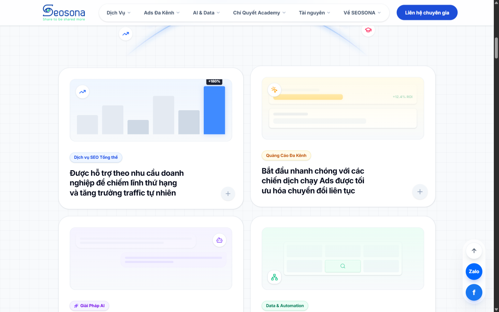
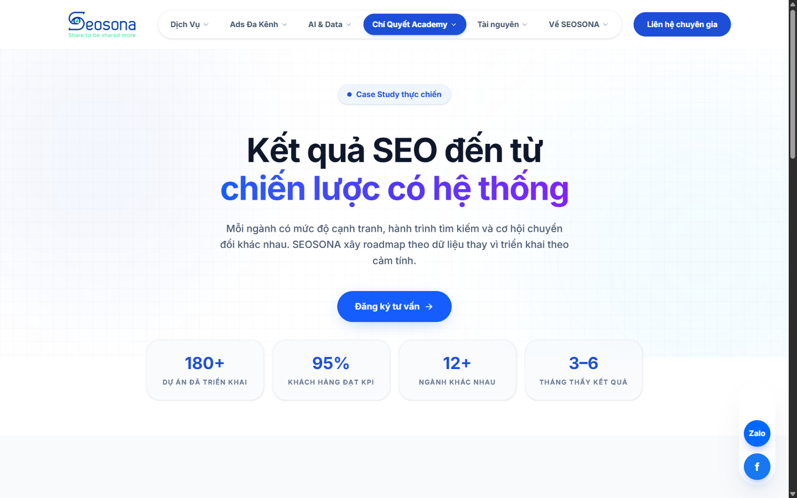

SEOSONA / REBUILD ARCHIVE / 2026
Một website SEO không cần trông như một website SEO.
Tôi biến bản rebuild SEOSONA thành một hệ thống có thể khám phá: dịch vụ để bắt đầu, bằng chứng để tin, nội dung để quay lại và dữ liệu để đi tiếp.
seosona.vercel.appBUILD / 2026
Digital ecosystemShare · Search · ConnectHL
Growth signal+180%
JANMARMAYJULSEPcontent system ready04 routes to conversion
01 / BROWSE THE BUILD
Chọn route.
Hiểu hệ thống.
05 SURFACES / 01 EXPLORER
Chọn một entry point để xem bản rebuild giải quyết intent, proof, content và process như thế nào.
ACTIVE SURFACECORE SOLUTIONS / BENTO NAVIGATION

02 / SYSTEM MAP
Không phải một website.
Một growth system.
Share, Search và Connect là ba lớp để tổ chức nội dung — còn SEO, Data, Content và Academy là bốn route để đi qua hệ thống.
signalknowledgeaction
SEOSONAGROWTH
SYSTEMshare · search · connect
01SEOfind signal02DATAread signal03CONTENTshare insight04ACADEMYbuild capability
SYSTEMshare · search · connect
03 / EVIDENCE SHELF
Bằng chứng trước lời hứa.
Mỗi card là một quyết định UX có thể kiểm tra: route, content type, proof layer hoặc process. Không trình bày screenshot như một vật trang trí.

PROOF / 01
Case study có context.
Metrics, ngành và câu chuyện tăng trưởng được đưa vào trước khi CTA xuất hiện.
Xem proof layer ↗RETURN / 02
Content có next step.
Resource hub biến một lần đọc thành learning loop có thể quay lại.
SEODATAGUIDE
Mở resource hub ↗dự án được kể lại bằng case study
Source: SEOSONA rebuild content / not a live performance metric04 / SHIP LOG
Một hệ thống tốt phải kể được cách nó được làm.
Audit legacy → shape the system → build the surfaces → verify the story. Đây là lý do landing này không chỉ là một poster của website mới.
Đọc repository- 01Audit the legacy
Lọc shortcode lỗi, nội dung spam và những route không còn có vai trò.
- 02Shape the system
Định nghĩa IA, service routes, content hub, case study và conversion path.
- 03Build the surfaces
Dựng light B2B UI, MDX content và responsive behavior bằng Next.js/Tailwind.
- 04Verify the story
Kiểm tra metadata, schema, redirect, Core Web Vitals và fallback trước deploy.
NEXT EPISODE
Mở bản rebuild.
Xem hệ thống chạy thật.
Case study này là bản đồ. Live rebuild là nơi bạn cảm nhận nhịp UX/UI và source là nơi bạn kiểm tra hệ thống phía sau.